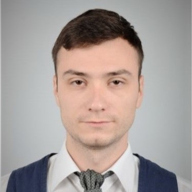
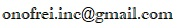

|  |
George-Bogdan OnofreiJunior Front & Back End Web Developer Bucharest, Romania Link to: Contact Information |
09/2019–10/2020 Sales Engineer - Teknoleb Laboratoty SRL, Partener Sartorius Lab Instruments GmbH & Co.
, Bucharest (România)
Company description: Teknoleb Laboratory is a private equity firm specialized in the import and distribution of laboratory equipment and supplies. The company is the only authorized Sartorius representative in Romania.
Responsibilities: Enhancing sales staff accomplishments and competence by planning delivery of solutions; Servicing existing accounts, obtaining orders, and establishing new accounts by planning and organizing daily work schedule to call on existing or potential sales outlets and other trade factors; Adjusting content of sales presentations by studying the type of sales outlet or trade factor; Focusing sales efforts by studying existing and potential volume of clients; Submitting orders by referring to price lists and product literature; Keeping management informed by submitting activity and results reports, such as daily call reports, weekly work plans, and monthly and annual territory analyses; Monitoring competition by gathering current marketplace information on pricing, products, new products, delivery schedules, merchandising techniques, etc.
Recommending changes in products, service, and policy by evaluating results and competitive developments; Resolving customer complaints by investigating problems; developing solutions; preparing reports; making recommendations to management.
Maintaining professional and technical knowledge by attending educational workshops; reviewing professional publications; establishing personal networks; participating in professional societies; Providing historical records by maintaining records on area and customer sales; Contributing to team effort by accomplishing related results as needed.
09/2018–07/2019 Production Engineer - Patisgal SRL, Galaţi (România)
Company description: The company started its activity by making pastries, cookies and
cakes for the Moldovan beneficiaries, being constantly among the first localities in Galaţi County in its field of activity. Accumulating experience in this industry, the company has diversified its breadth of production, producing bakery products, which has managed to maintain itself in the top of the zonal producers, expanding on the national and international market.
Responsibilities: Performing qualitative and quantitative inspections at the reception of raw and auxiliary materials. Organizing the production flow and programming the quantities of raw materials. Testing samples of raw materials sent by suppliers. Coordination of subordinate worker teams to carry out production tasks. Performance evaluation for subordinate staff. Check reports and monitoring equipment and working parameters according to IFS procedures. Filling out forms related to the area of activity, in accordance with ISO, HACCP, FSSC. Ensure implementation and maintenance of SMCSA processes. Checking all technological parameters throughout the production flow.
03/2017–06/2018 Sales Assistant - Area Manager - Arabesque SRL, Galaţi (România)
Company description: Arabesque is the largest distributor of construction and finishing materials in Romania. Founded in Galaţi in 1994, the company is a regional presence in Moldova, Ukraine and Bulgaria, constantly innovating and actively developing the services offered to its clients in the sphere of constructions.
Responsibilities: Preparing and delivering technical presentations explaining products or services to customers and prospective customers; Conferring with customers and engineers to assess equipment needs and to determine system requirements; Collaborating with sales teams to understand customer requirements and provide sales support; Securing and renewing orders and arranging delivery; Planning and modifying products to meet customer needs; Recommending improved materials to customers, showing how changes will lower costs or increase production; Helping in researching and developing new products.
11/2015–01/2017 Quality Control Engineer - Carniprod SRL, Tulcea (România)
Company description: Carniprod is company in Romania that operates in the Meat Product Manufacturing Industry. It was established in 1993 and is known at national level due to their unique pork, poultry, and beef products, made by original recipes, using in production only meat obtained in its zootechnical complex.
Responsibilities:
Organizing and implementing the food quality and safety assurance system
Elaboration of the quality control and verification plan
Elaboration of the of the quality audit plan
Monitoring the observance and correct application of the legislation regarding the quality assurance of the products
Supervising and ensuring compliance with optimal processing conditions on the technological flow
2015–2018 Master's degree, Food Engineering
„Dunărea de Jos” University, Faculty of Food Science and Engineering, Galați, Romania
Programme of study: Control, Expertise and Safety of Foods
Description: Advanced Chemical, Microbiological and Toxicological Methods for Food Control and Analysis; Statistical Analysis and Design of Experiments in Food Industry; Authentication and Expertize in Food Products; Management of Food Quality and Safety; International Food Legislation; Food Traceability; Quality Audit.
2011–2015 Bachelor's degree
„Dunărea de Jos” University, Faculty of Food Science and Engineering, Galați, Romania
Programme of study: Engineering and Management (Engineer Diploma)
Description: Food Chemistry; Human Food Psychology; Food Quality Control; Legislation and Consumer Protection; Falsifications of Food and Their Identification; Hygiene of Food Companies; Commercial Law.
Native Language Romanian
Other Language English
Internship organized within the project POSDRU 161 / 2.1 / G / 138177, with the title "Prepare for the future! - Internships for students in the field of public nutrition", as a student of the University "Dunărea de Jos" - Galaţi , between 09-27.02.2015.
Eurodevelopment Association, Galaţi (România)
Fulfilling the tasks received from the organization
Red-flagging any unexpected change in the program
Organizing the training courses proposed by the organization
Researching, planning and implementing procedures, policies and intern reglementation of the organization.
"MaiMultVerde" Association, Galaţi (România)
Participating in the largest ecological education and volunteer project in Romania, I have shown commitment, team spirit, civic attitude and responsibility by practicing ecological activities and volunteer labor.
